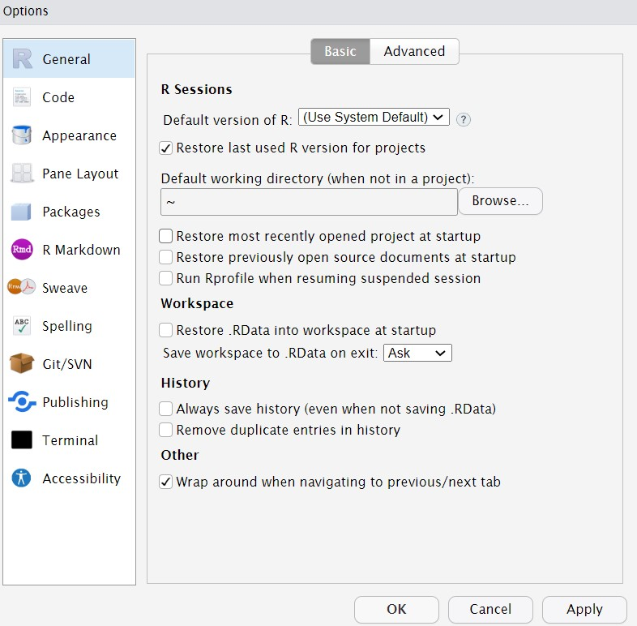
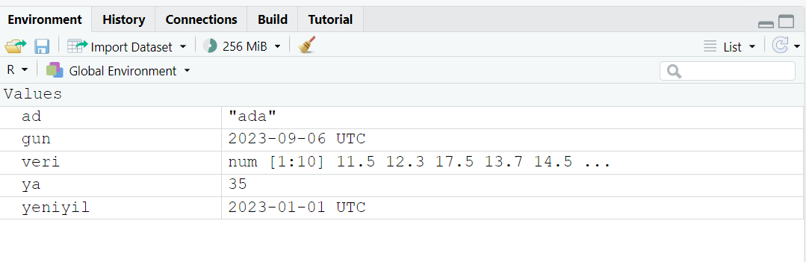

Code
install.packages("devtools")Bu bölümde, R ve RStudio’nun nasıl kullanılacağının yanı sıra bazı temel programlama kavramları ve terminolojisi, yaygın tuzaklar, faydalı ipuçları ve nereden yardım alınabileceği konularını ele alacağız.
Programlama deneyimi olmayanlar için bu bölüm oldukça yararlı olacaktır ancak daha önce R kullanmış olsanız bile bazı yararlı ipuçları ve püf noktaları bulabilirsiniz.
Bu bölüm kendi kodunuzu yazmaya başlayana kadar bir anlam ifade etmeyebilir:)
Biraz sabretmenizi bekliyorum !
R istatistiksel hesaplamalar yapabilen bir programlama dilidir.
1996 yılında Auckland Universitesi’nde Ross Ihaka ve Robert Gentleman tarafından geliştirilmiştir.
1960 yılında Bell Laboratories’de John Chambers ve arkadaşları tarafından geliştirilen S dilinin açık kaynak kodlu halidir.
R yazılımı Genel Kamu Lisansi (GNU* General Public Licence) koşulları altında ücretsiz dağıtılmaktadır.
R ve Temel Geliştirme Takımı (R core team) ile ilgili bilgilere R’in internet sitesinden (https://www.r-project.org/) ulaşılabilir.
R dilinin ilk sürümü 29 Subat 2000 tarihinde yayınlanmıştır. Her iki-üç ayda bir sürümler güncellenmektedir.
RStudio, R ile çalışmayı kolaylaştıran bir Entegre Geliştirme Ortamıdır (Integrated Development Environment[IDE]).
Bunu İngilizce bilmek ve kitap yazmak için NotePad gibi düz bir metin editörü kullanmak ile Microsoft Word gibi bir kelime işlemci kullanmak gibi düşünün. Bunu yapabilirsiniz, ancak bu kadar iyi görünmez ve yazım denetimi ve biçimlendirme gibi şeyler olmadan çok daha zor olur. Benzer bir şekilde, R Studio olmadan da R kullanabilirsiniz ancak bunu tavsiye etmiyorum.
Unutmamanız gereken en önemli şey, bu ders için tüm çalışmalarınızı RStudio kullanarak yapacak olsanız da, aslında iki yazılım parçasını da kullanıyorsunuz, bu da zaman zaman her ikisinin de ayrı güncellemeleri olabileceği anlamına geliyor.
R’yi ölçme için kullanmanın iki yolu vardır. İlk olarak, web tarayıcınız aracılığıyla R ve R’nin çevrimiçi bir sürümünü kullanabilirsiniz (R server/sunucusu). İkincisi, R ve RStudio’yu dizüstü veya masaüstü bilgisayarınıza ücretsiz olarak indirip kurabilirsiniz.
R özgür istatiksel bir programlama dilidir.
R aynı zamanda bir yorumlayıcıdır (interpreter).
R, bir veri tabanı değildir ama veri tabanlarına bağlanabilir.
Önceki sürümleri kullancı dostu olmasa da, son zamanlarda kod editörlerine çok sayıda işlev eklenmiştir.
Ayrıca java gibi diller aracılığı ile ara yüz desteğine sahip bir yazılım geliştirme ortamıdır.
Tablolardan oluşan yazılım paketlerine (Excel, Minitab gibi) benzememekle birlikte, yeni geliştiren bazı paketler farklı ara yüzler sağlamaktadır.
Ücretsiz olması nedeniyle, ticari desteğe tabi bir yazılım değildir. Ancak destek alınabilecek çok sayıda kaynağa erisilebilir. (stackoverflow, mail listeleri, chatgbt)
R istatistiksel programlama, veri analizi ve grafiksel gösterim için kullanılan ve ticari bir amaç gütmeyen ücretsiz bir yazılımdır.
R, UNIX, Windows ve MacOS gibi çeşitli platformlarda kodları derlemekte ve çalıştırmaktadır.
SPSS, SAS gibi veri analizi programları ücretlidir, ayrıca bazı özel psikometri analizleri için yeterli değildir.
R, açık kaynak kodlu olduğu için program kodlarına istenildiği zaman erişilebilir.
Diğer istatistiksel yazılımlar ile karşılaştırıldığında R komut satırı ara yüzünü kullanmaktadır.
Basit koşullar, döngüler ve kişi tanımlı fonksiyonlar yazmaya uyumlu basit ve etkili bir yazım diline sahiptir.
R’in ayrıca grafiksel imkânları oldukça fazladır; bu nedenle yayınlanabilir/basıma uygun grafikler oluşturmak kolaydır.
R ekibi birçok alanda ayrıntılı dokümantasyonu yapılmış R paketleri geliştirmektedir.
Klasik istatistik yazılımlarında analiz sonuçları bir kez elde edilir. R yazılımında ise sonuçlar çalışma alanına kaydedilerek, ileriki analiz aşamalarında tekrar kullanabilir.
R, psikometri alanında sıklıkla kullanılan simülasyon çalışmaları için (tekrarlı işlemler için) de avantaj sağlamaktadır.
R, diğer programlama dilleri ve istatistik paket programları ile uyumludur.
GUI’leri (grafiksel kullanıcı arayüzü; daha kullanıcı dostu bir ortam sağlar) R diline indirin ve uygulayın. -> SPSS gibi görünmesini sağlar -> Programlama gerektirmez -> Bu şekilde bir şeyler yapmak ilk deneyim olarak yararlıdır. (R Commander (Rcmdr), Deducer)
Belirli paketlerin sözdizimini öğrenin ve kullanın (programcı olmayanların R’yi kullanmasının yaygın bir yolu) -> Paketler, fonksiyon ve yardım dosyalarından oluşan gruplardır. Başka biri çözümü zaten “programlamıştır” ve siz de ihtiyaçlarınıza yeterince uyduğu için onu kullanıyorsunuzdur. -> Her paketin kendi sözdizimi, kısıtlamaları ve hataları vardır -> Paketlerin hepsi açık kaynaklıdır
R-programlamayı öğrenin -> Kendi fonksiyonlarınızı yazın -> Öğrenmesi en zoru, ancak maksimum esneklik sağlar
Başta öğrenilmesi kolay görünse de, R’da uzmanlaşmak oldukça zordur.
Menu ile kullanılan programlara alışkın olan kişiler için başlangıçta korkutucu olabilir.
R ile bir analizi yapabilmek için planlama yapılması gerekmektedir.
R kullanıcıları çoğunlukla programlamacı değildir. Programlamaya hâkim olmayan kişiler tarafından hazırlanan, okunması ve sürdürülebilirliği zor kodlar oluşturulabilir.
Başlangıçta kodları yazmak yıldırıcı olabilir; ancak çalışmaların tekrarlanabilirliği açısından avantaj sağlamaktadır.
Bu duruma bir örnek vermek gerekirse, 20 adet regresyon denklemi kurulup regresyon katsayıları karşılaştırılmak istenirse, R yazılımı sadece regresyon kat sayılarını gösterebilir ve tek bir satırda tüm regresyon sonuçlarını karşılaştırmaya olanak verir. Aynı işlem için diğer istatistiksel yazılımlarda 20 ayrı pencereden elde edilen sonuçların elle yazılarak karşılaştırılması gerekecektir.
R’da hata yapma olasılığı diğer programlara göre daha fazladır. Hata kaynağı için varsayımların iyi bilinmesi gerekmektedir.
Hız konusunda SPSS ve SAS’a göre avantajlı olsa da diğer dillere göre (Python, Matlab gibi) daha yavaştır.
Geliştirilen çok fazla paket olduğu için, ihtiyaca uygun en iyi paketin seçimi zor olabilmektedir.
Bu bir dezavantaj gibi görünse de istatistiksel işlemlerin arka planını anlamaya yardımcı olur.
Bu tarz zayıf hazırlanmış kodlar farklı koşullarda yavaş çalışabilmektedir.
Çoğu kullanıcı bu eksiklikleri gidermek için kodları değiştiremez. Özellikle çok iyi yapılandırılmamış olan kodlar R’da yavaş çalışabilmektedir.
Internet tarayıcısına R yazılımın internet sitesinin ana sayfasının adresi yazılır. https://www.r-project.org/
Sol menüde yer alan “download CRAN” bölümüne tıkladıktan sonra ülke seçilir. Seçilen ülkenin yakınlığı sadece yükleme hızını değiştirecektir.
Çıkan sayfada “Download and Install R” baslığı altından işletim sistemine uygun olan bağlantı seçilir.
R konsolda çalışmaya doğrudan başlanabilir; ancak konsol kullanımı bir kod editörü olmadığı için çok kullanışlı değildir.
Rstudio hata ayıklama, görselleştirme araçları ile birlikte yüklenen modern bir kod editörüdür.
https://www.rstudio.com/ internet sitesinden kullanılan bilgisayar ve işletim sistemine uygun olarak seçilip indirilebilmektedir.
Rstudio R ile daha üretken olmanıza yardımcı olacak bir dizi araç içerir, örneğin:
R kodlarınızı vurgulamak için bir sözdizimi vurgulama düzenleyicisi
R kodlarını yazmanıza yardımcı olacak işlevler (otomatik tamamlama)
Çeşitli grafikler oluşturmak ve kaydetmek için çeşitli araçlar (ör. histogramlar, dağılım grafiği)
Verileri içe veya dışa aktarmak için bir çalışma alanı yönetim aracı
Benim açıklamalarım yetmediyse R’yi bilgisayarınızda kullanmak için, lütfen daha ayrıntılı talimatlar ve indirmeniz gereken dosyaların bağlantılarının yanı sıra R’yi farklı bilgisayar türlerine yüklemek için bir dizi kılavuza bağlantılar içeren Installing R adresine bakın!!
Yüklemeler konusunda daha da fazlasına ihtiyacımız var ise R studio R !
Verilen linkte yer alsa da ayrıca eklemeye ihtiyaç duyduğum bağlantılar:
Rtools Rtools, kaynak koddan derleme yapmaya yarayan araçları içeren bir R yardımcısıdır. Önemli: Eğer Windows kullanıyorsanız, ayrıca Rtools yüklemeniz gerekir.
devtools
install.packages("devtools")Rstudio’da panellerin yerlerini değiştirebiliriz.
Bunun yanı sıra yazı tipi, büyüklüğü gibi özellikleri de değiştirebiliriz.
Varsayılan olarak, R Studio’yu açtığınızda, kodunuz ve oluşturduğunuz tüm nesneler dahil olmak üzere en son ne üzerinde çalıştığınızı gösterir. Bu yararlı gibi görünebilir, ancak aslında değerinden daha fazla soruna neden olma eğilimindedir, çünkü yanlışlıkla bir nesnenin eski bir sürümünü kullanma riskiniz olduğu anlamına gelir. R Studio’yu her başlattığınızda yeni bir kopya açacak şekilde ayarları değiştirmenizi öneririz. Bunu Tools - Global Options seçeneğine tıklayarak ve ardından aşağıdaki gibi görünmesi için kutuların seçimini kaldırarak yapabilirsiniz.

Dönem boyunca Rstudio kullanımına aşina olacaksınız. Bu süreci kolaylaştırmak için bağlantıları verilen dökümanlara göz atabilirsiniz.
R’yi bilgisayarınıza kurmanın avantajı, kullanmak için internete bağlı olmanız gerekmemesi, dosyalarınızı kaydetmenin ve yönetmenin daha kolay olması ve sunucunun çökmesi durumunda sorun yaşanmamasıdır (bu nadirdir, ancak olmuştur).
R sunucusunu kullanmanın avantajı, bilgisayarına herhangi bir şey yüklemenize gerek olmaması, sadece web tarayıcınız üzerinden erişebilmenizdir.
R’yi yükleyemeyeceğiniz bir bilgisayarınız varsa (örneğin Chromebook) veya R’yi bilgisayarınıza yüklemeyle ilgili ciddi sorunlarınız varsa sunucuyu kullanmanızı öneririz.
R Studio, kodu deneyebileceğiniz bir konsola sahiptir (Şekil’de sol alt pencerede yer alır.
Ayrıca kod editörü (sol üst), “Ortam” sekmesinde oluşturduğunuz fonksiyonları ve nesneleri gösteren bir pencere ( sağ üst pencere) ve grafikleri, dosya paketlerini ve yardım belgelerini gösteren bir pencere ise (sağ alt) bulunur.

2+2[1] 42 + 2 [1] 42+
2[1] 4Atama operatörü olarak “küçüktür” simgesi ile “kısa çizgi” simgesi <- simgeleri kullanılabilir.
<- yerine “eşittir” = simgesi de atama operatörü olarak kullanılabilir.
Ancak = operatörü programlama yaparken matematiksel eşitlikle karışabilmektedir.
Atama yapılacak nesne isimlendirilirken harflerle (A* Z veya a* z) başlamalıdır.
İsimlendirmeye harfle başlandıktan sonra rakamlar (0* 9), nokta (.) ve alt cizgi (_) ile devam edilebilmektedir.
R harflerin küçük ve ya büyük olmasına karşı duyarlıdır.
R fonksiyonlarına benzer isimlerde nesne ismi kullanmamaya dikkat edilmelidir.
Ayrıca c,C,D,F,I,q,t,T gibi tek harfli nesne ismi kullanmaktan kaçınılmalıdır; bunların R’da özel anlamları bulunmaktadır.
R yazılımında # işareti ile başlayan satır, yorum satırıdır.
Genellikle komutların anlamını açıklamak için kullanılmaktadır.
R, bu satırları dikkate almaz, bunlar sadece kullanıcılar için bilgi ve hatırlatıcı açıklamaları içermektedir.
# Yorum satirlari kodlarinizi anlamli hale getirir.
a <- 2
y <- a * a
y[1] 4toplama işlemi için +,
çıkarma işlemi için -,
çarpma işlemi için *,
bölme işlemi için /,
üs alma işlemi için ^ veya *
mod alma icin ise %% operatorleri kullanılmaktadır.
Kodlamanızın büyük bir kısmı nesne oluşturmayı ve nesneleri manipüle etmeyi içerecektir. Nesneler bir şeyler içerir. Bu şeyler sayılar, kelimeler veya işlemlerin ve analizlerin sonucu olabilir
Alıştırma Nesneler oluşturma
ad, yas, gun, yeniyil ve veri nesnelerinin göründüğünü göreceksiniz.ad <- "ada"
yas <- 16 + 20
gun <-Sys.Date()
yeniyil <- as.Date("2024-01-01")
veri <- rnorm(n = 10, mean = 15, sd = 3)
Bu örneklerde, ad, yas ve yeniyil her zaman ada, 36 değerlerini ve 2024 Yeni Yıl Günü tarihini içerecektir, ancak gun tarihi işletim sisteminden alacaktır ve veri rastgele oluşturulmuş bir veri kümesi olacaktır, bu nedenle bu nesnelerin değerleri statik olmayacaktır.
Daha da önemlisi, nesneler hesaplamalara dahil olabilir ve birbirleriyle etkileşime girebilir. Örneğin:
yas + 10[1] 46yeniyil - gunTime difference of -262 daysmean(veri)[1] 15.72075n1 <- yas + 10<- ifadesini içerir şeklinde okumak faydalı olabilir, örneğin ad ifadesi ada metnini içerir.
Nesnelerin ‘değişkenler’ olarak adlandırıldığını da görebilirsiniz. Programlama terimlerinde ikisi arasında fark vardır, ancak çok sık eşanlamlı olarak kullanılırlar.
Alıştırma Nesneler oluşturma
# en nesnesi tanimlama
# boy nesnesi tanimlama
# alan nesnesi tanimlama
# alan nesnesini yazdirma[1] 40# en nesnesi tanimlama
# boy nesnesi tanimlama
# kosegen nesnesi tanimlama
# kosegen nesnesini yazdirma[1] 10.77033Datacamp hesapınızda yer alan 🔗 datacamptan size atanan bölümü tamamlayınız ve kitabın ilk bölümünü tamamlayınız.